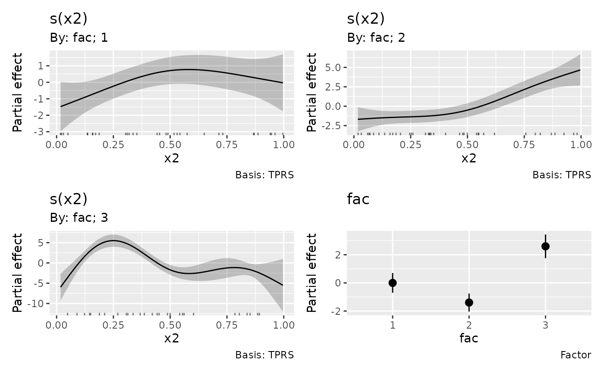

Configure labels on axes, legends and colour bars across draw() and
assemble() methods. Omitted settings retain the existing appearance.
Arguments
- axes
Named list with optional
wrap,n_dodge,angleandtitle_wrapsettings.wrapandtitle_wrapare positive integer widths in characters. Tick labels wrap at word boundaries, preserving explicit line breaks. Unbroken words are not split.n_dodgeis the positive integer number of rows for horizontal-axis labels, or columns for vertical-axis labels.angleis a finite number of degrees between -90 and 90. Tick settings apply only to discrete axes;title_wrapapplies to ordinary x and y axis titles, including continuous axes.- legend
Named list with optional
wrap,title_wrap,nrow,ncolandbyrowsettings. Wrapping widths and row/column counts are positive integers.byrowis logical. These settings apply to key-based legends, including colour, fill, shape and linetype legends.- colourbar
Named list with optional
title_wrap,angle,widthandheightsettings.title_wrapis a positive integer width in characters;angleis between -90 and 90 degrees. Dimensions are positive, length-onegrid::unit()objects and refer to the displayed bar's width and height. These settings apply to continuous colour and fill guides.
Details
Every setting defaults to NULL, retaining the method's existing behaviour.
Pass the result as label_control to draw() or assemble(). The same
configuration can be reused across plot types; absent guides are ignored.
Mathematical expressions and missing labels are preserved. Wrapping changes
displayed text after scale labelling, without changing factor levels,
breaks, transformations or palettes. Numeric formatting remains controlled
by the scale's labels argument.
Explicit axis settings override the existing angle and n_dodge plotting
arguments on discrete axes. Hidden guides stay hidden. Native guide types
and unrelated settings are retained; later ggplot2 scale and guide additions
follow their usual precedence. Settings apply to panels before patchwork
collects their guides, including plots returned with wrap = FALSE.
Projected coordinate labels in 3D plots retain their renderer's settings;
their ordinary legends and colour bars can use this control.
Examples
# Wrap categorical tick labels and stagger them across two rows.
layout <- draw_label_control(axes = list(wrap = 12, n_dodge = 2))
# Reuse one configuration for legend text and colour-bar layout.
layout <- draw_label_control(
axes = list(wrap = 12),
legend = list(wrap = 20, title_wrap = 20, ncol = 2),
colourbar = list(title_wrap = 20, height = grid::unit(35, "mm"))
)
# Draw a model with the requested layout.
load_mgcv()
dat <- data_sim("eg4", n = 100, seed = 42)
model <- gam(y ~ fac + s(x2, by = fac, k = 5), data = dat, method = "REML")
draw(model, label_control = layout)
